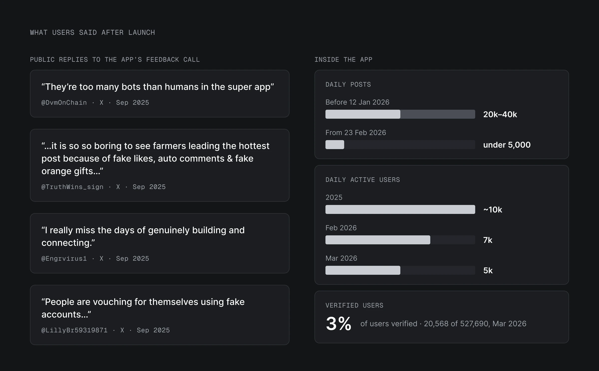
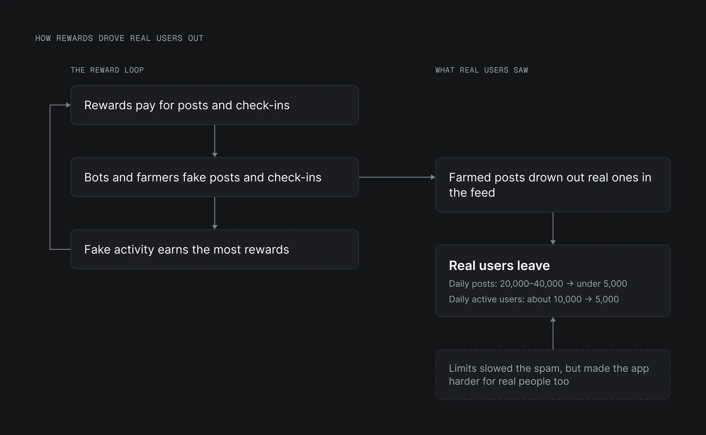
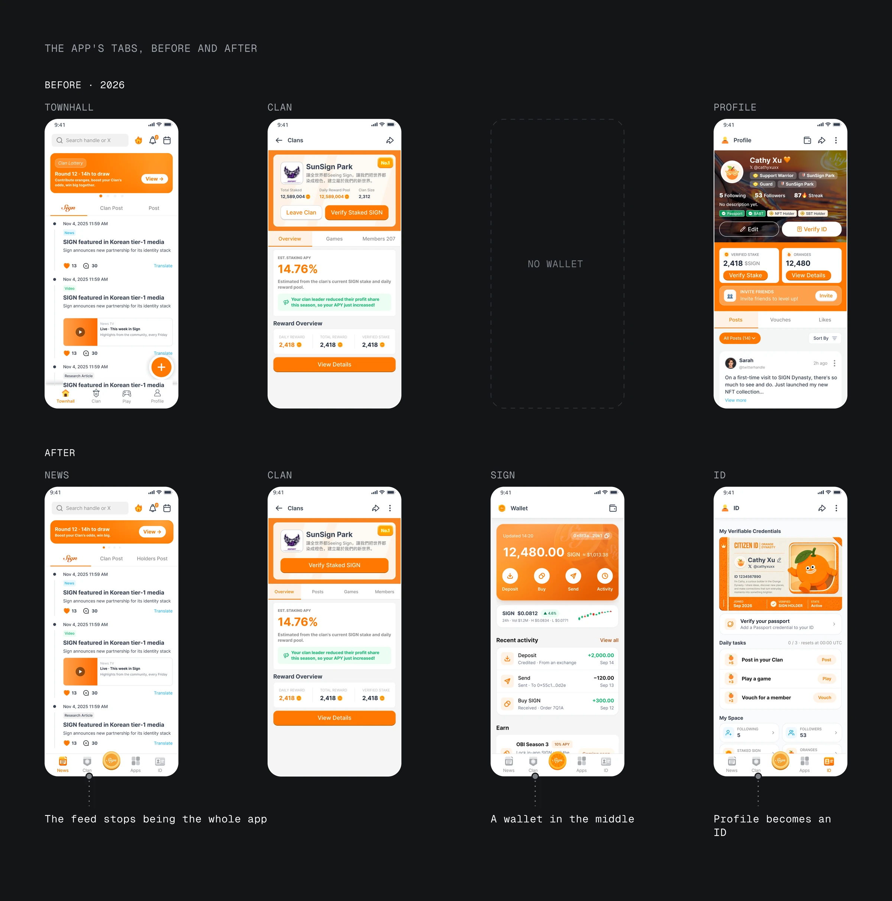
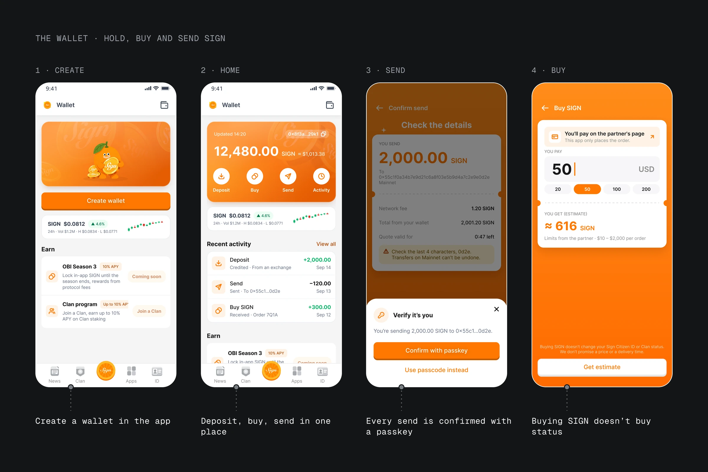
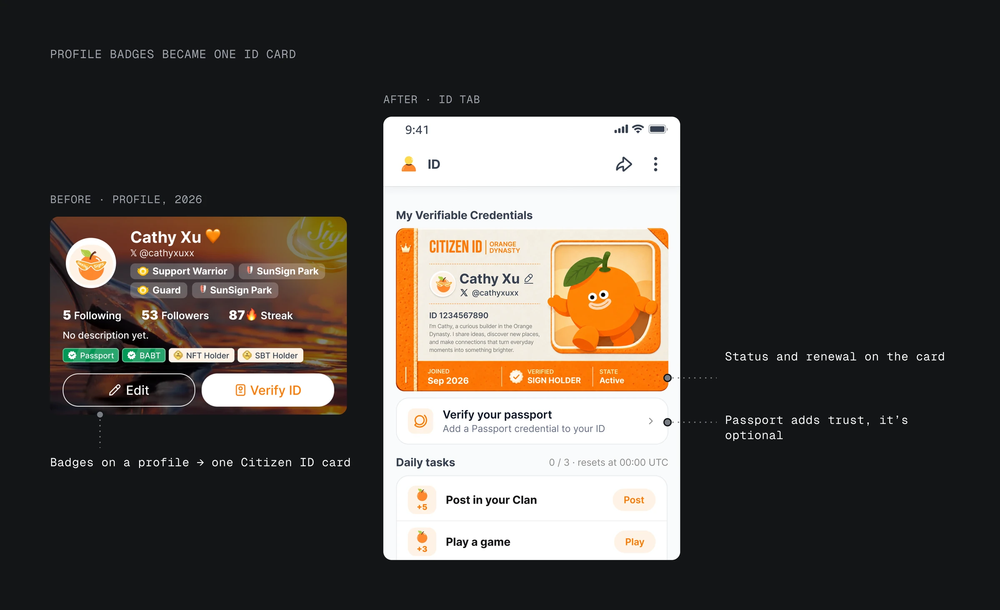
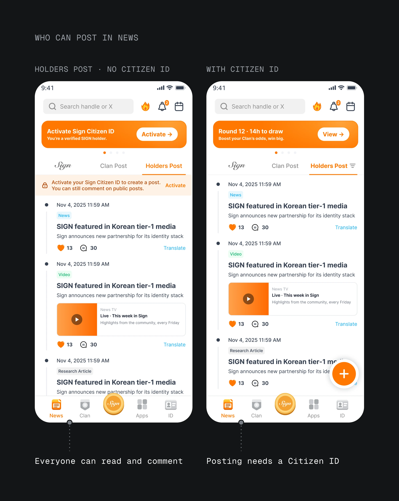
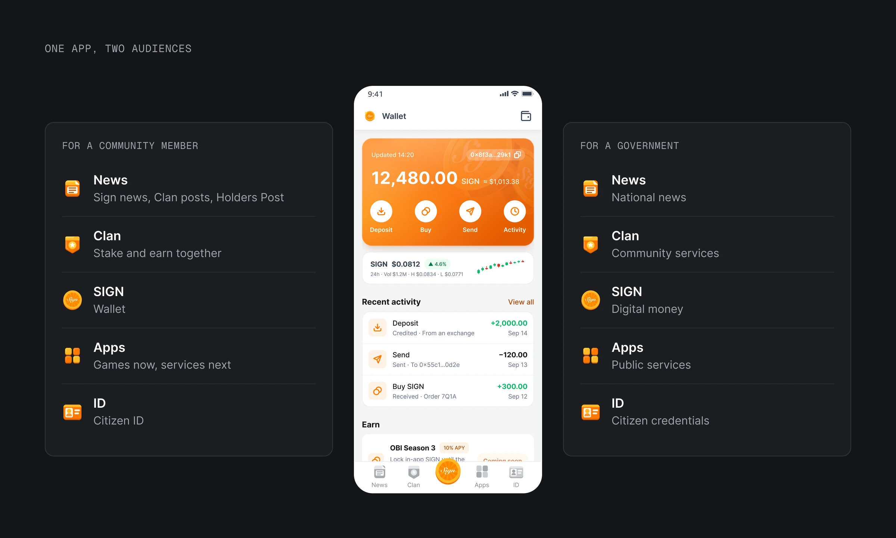

02 · Problem
400K+ people joined in two weeks, then bots pushed real users out
Orange Dynasty launched on Aug 18, 2025, and 400K+ people joined in 14 days (Sign on X, Sep 3, 2025). It was the community app of Sign, where I work: a feed called Townhall, clans, games and profiles, for people who buy and hold SIGN, Sign's token. Most came to earn rewards. I was its product designer from launch.
Three weeks in, I collected feedback on X and got 198 replies (@OrangeDynasty thread, Sep 6, 2025). Most replies made the same complaint: too many bots.
Our internal data analysis in March 2026 showed the same thing. Daily posts fell from 20,000–40,000 until mid-January to under 5,000 by late February 2026. Daily active users fell from about 10,000 in 2025 to 5,000 by March 2026. Only 3% of accounts, 20,568 of 527,690, were verified.
The first fixes were limits. From September 2025, unverified users could post three times a day. In November, builder posts were paused after farmers abused them. Limits slowed the spam, but restrictions were not the answer: they made the app harder for real people too, and drove them away.

02 · Problem
400K+ people joined in two weeks, then bots pushed real users out
- Orange Dynasty launched on Aug 18, 2025, and 400K+ people joined in 14 days.
- Three weeks in, I collected feedback on X and got 198 replies; most made the same complaint: too many bots.
- Daily posts fell from 20,000–40,000 until mid-January to under 5,000 by late February 2026.
- Restrictions slowed the spam, but made the app harder for real people too, and drove them away.
03 · Insight
Bots were an incentive problem first
Bots were an incentive problem before they were a moderation problem. Rewards paid for posts and check-ins, so posts and check-ins were what got faked. Real posts drowned in farmed ones. Restricting posts treated the symptom, and more social features would have fed the same loop.

So the question changed. Stopping bots from posting was the narrow version. The redesign asked two things the feed couldn't answer: why would someone open the app with no reward on offer, and how can the app tell a holder from a bot? The answers became its two centres: a wallet people use for themselves, and a Citizen ID that rests on SIGN in a verified wallet. Together they make one app a government can also picture for its citizens.
03 · Insight
Bots were an incentive problem first
- Bots were an incentive problem before they were a moderation problem.
- Restricting posts treated the symptom, and more social features would have fed the same loop.
- So the redesign asked why someone would open the app with no reward, and how to tell a holder from a bot. The answers: a wallet and a Citizen ID.
04 · Wallet
Most users came for airdrops; the wallet let them invest their SIGN
The spam-filled feed is no longer the whole home screen
Before the redesign, the app opened on Townhall, the open feed where the spam lived. Adding a wallet tab beside it would still have opened on the spam. So in the new tab bar I designed, the feed became part of News, and the wallet took the centre.
- News holds Sign news, clan posts and Holders Post, the public board for holders.
- Clan lets holders stake SIGN together and share the yield, with games and posting rewards.
- SIGN, in the middle, is the wallet.
- Apps is the old Play tab, with games for now.
- ID is the old Profile, rebuilt around the Citizen ID card.
People who came for the feed now see Sign news and holder posts next to it, so farmed posts are no longer all they see.

A wallet gives airdrop users a way to invest their SIGN
Most early users came for airdrops. The SIGN tab gives them a way to invest what they earn: they create a wallet in the app, deposit, buy SIGN through a partner exchange, send it and see their activity. It is a reason to open the app that doesn't depend on the next reward.
The wallet and the Citizen ID stay apart in this phase, because the Citizen ID is what tells a holder from a bot. If SIGN bought in the app wallet granted the ID, a farm account could buy its way past that line, and the reward loop would come back. The wallet says it plainly: "No Citizen ID or Clan access comes with it." Holders prove eligibility with a linked wallet instead.

04 · Wallet
Most users came for airdrops; the wallet let them invest their SIGN
Decision 1
The spam-filled feed is no longer the whole home screen
- What
- The app used to open on the spam-filled feed; now the feed is part of News and the wallet takes the centre of the tab bar.
Decision 2
A wallet gives airdrop users a way to invest their SIGN
- What
- Holders deposit, buy and send SIGN in the app, a reason to open it that doesn't depend on the next reward.
05 · Citizen ID
Only Citizen ID holders can post
Before, identity was a row of badges on a profile: a passport check, a few tokens and NFTs. A verified badge changed little. Unverified users could still post three times a day.
Now one Citizen ID card decides who can post. The ID tab leads with it: name, status and renewal date. It needs any SIGN in one verified wallet and renews every 30 days. The card unlocks two things: new posts in Holders Post and new Clan applications. Everyone else can still read and comment, so the line falls between holders and bots without shutting readers out. A passport credential can sit next to the card for people who want to show more.
The bar at the top of News shows each person their next step: verify a wallet, activate the Citizen ID, join a clan.
A Citizen ID that lapses stops new posts, even from real people. Renewal opens a day before expiry and can run automatically if the holder agrees.
Any SIGN counts, so small holders can post
The early spec asked for a minimum of 100 SIGN. My first design used it; the product lead moved it to any amount, and I agreed: restrictions had already failed as a filter, and a minimum would shut out most small holders. Any amount of SIGN now counts, so small holders, most of the community, keep a voice. The price is a cheaper way in for reward farmers, people who game rewards with fake accounts. The 30-day renewal and the optional passport credential push back.


05 · Citizen ID
Only Citizen ID holders can post
- Before, identity was a row of badges on a profile: a passport check, a few tokens and NFTs.
- Now one Citizen ID card decides who can post.
- The card unlocks two things: new posts in Holders Post and new Clan applications.
- Any amount of SIGN counts, so small holders, most of the community, keep a voice.
06 · Before and after
From a feed to a wallet and a Citizen ID
Same community, a different app.
| Before the revamp | After | |
|---|---|---|
| Tabs | Townhall, Clan, Play, Profile | News, Clan, SIGN, Apps, ID |
| First tab | Townhall feed | News: Sign news, clan posts, Holders Post |
| Who can post | Anyone; unverified users 3 posts a day | Citizen ID holders; everyone can read and comment |
| Identity | Badges on a profile | One Citizen ID card that renews every 30 days |
| Money | No wallet | SIGN wallet |
| Games | Play tab | Apps tab, services next |
06 · Before and after
From a feed to a wallet and a Citizen ID
| Before the revamp | After | |
|---|---|---|
| Tabs | Townhall, Clan, Play, Profile | News, Clan, SIGN, Apps, ID |
| First tab | Townhall feed | News: Sign news, clan posts, Holders Post |
| Who can post | Anyone; unverified users 3 posts a day | Citizen ID holders; everyone can read and comment |
| Identity | Badges on a profile | One Citizen ID card that renews every 30 days |
| Money | No wallet | SIGN wallet |
| Games | Play tab | Apps tab, services next |
07 · Government demo
One app: a community app for holders, a demo for governments
Sign brings Orange Dynasty into national-level partnership talks as a working demo of digital ID and digital money with real users. Read by a government, each tab is a public service: News is national news, the SIGN wallet is digital money, Apps is public services, and ID is citizen credentials.
An ID and a wallet are what Sign builds for countries. Community members use them first, in an app they already open. A government sees them working with real users.
The government reading has limits. An earlier plan put a central-bank-style digital currency inside the app. It was parked for financial compliance and app-store rules, so in the demo the SIGN wallet stands in for digital money.

07 · Government demo
One app: a community app for holders, a demo for governments
- Sign brings Orange Dynasty into national-level partnership talks as a working demo of digital ID and digital money with real users.
- Read by a government, each tab is a public service: News is national news, the SIGN wallet is digital money, Apps is public services, and ID is citizen credentials.
- An ID and a wallet are what Sign builds for countries.
08 · Result
Live since 2025, Citizen ID release next
Orange Dynasty has been live on the App Store and Google Play since Aug 18, 2025 (Sign on X, Aug 18, 2025). 400K+ people joined in its first 14 days.
The redesign's Citizen ID release is in final testing, targeted for Nov 20, 2026. The wallet comes in the release after. Sign already shows the app in national-level partnership talks.
What I'd measure after release: the share of new Holders Post posts from Citizen ID holders, posts reported as bots, 30-day renewal rates, and daily active users once the wallet ships.
08 · Result
Live since 2025, Citizen ID release next
- Orange Dynasty has been live on the App Store and Google Play since Aug 18, 2025 (Sign on X, Aug 18, 2025).
- The redesign's Citizen ID release is in final testing, targeted for Nov 20, 2026.
- What I'd measure after release: the share of new Holders Post posts from Citizen ID holders, posts reported as bots, 30-day renewal rates, and daily active users once the wallet ships.